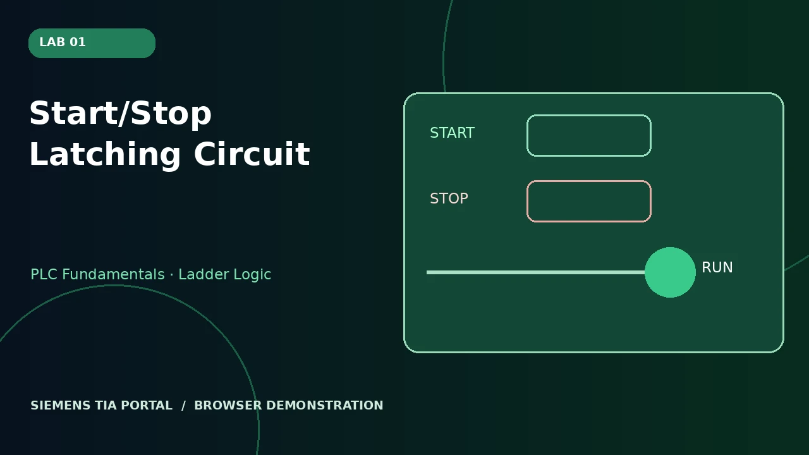
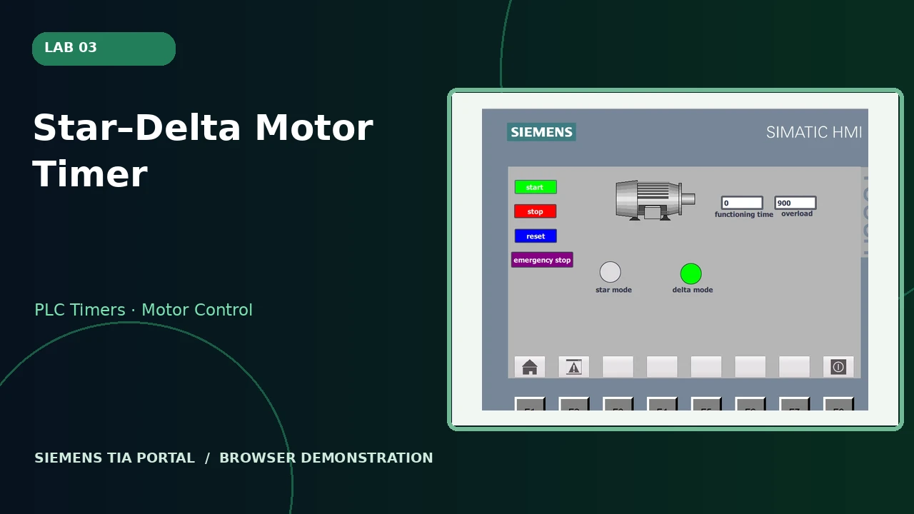

LAB 01 · PLC Fundamentals · Ladder Logic
Start/Stop Latching Circuit
A maintained run output using start, stop and seal-in logic.
A collection of industrial control exercises exploring latching logic, conveyor counters, motor timers and Human–Machine Interfaces (HMI). View original TIA Portal screenshots and run interactive browser demonstrations.

A maintained run output using start, stop and seal-in logic.

A conveyor that detects objects and stops at the target count.

Timed star-to-delta transition with overload timing and interlocking.

An HMI view of a conveyor with object sensing, timer and box tracking.

Group 15's MATLAB/Simulink and Arduino temperature-control project (2026), with hardware photographs and a browser demonstration.